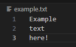

In the first part, we go through useful documentation pages, the benefits and advantages of Rust, and information about Rust in general.
The following paragraphs discuss the basic commands of the cargo tool, mutable and immutable variables, printing, taking input from the user.
Rust's own book: https://doc.rust-lang.org/book/
Rust's documenation page for the standard library: https://doc.rust-lang.org/stable/std/index.html
After installing Rust and its tools, you are ready to make your first project using the cargo tool.
cargo --version
If the version is not displayed but an error code is received, see the installation instructions for your operating system again.
cargo new projektin_nimi --bin
The cargo new command creates a new project with the name you give. The --bin parameter makes the program executable from a project, instead of a library. Cargo creates a folder called project_name - the name you give - containing several files.
The most important files for now are Cargo.toml, which is at the root level of the folder, and the main.rs file in the src folder. Rust files end in rs.
[package]
name = "project_name"
version = "0.1.0"
authors = ["student"]
[dependencies]
[dependencies]
rand = "0.8.5"
When the user adds the library to the Cargo.toml file and the project uses it, with the next build command or run command, cargo knows how to translate the library into an executable form so that the commands it brings can be used. The file defines which version of the library is found. The latest available version can be found in the library documentation.
cargo buildThe above command will compile your program into executable form.
cargo runIf the files have changed since the last program run, cargo will compile the files again and then run your program.
let x = 5; // immutable variable
// x = 10; // This would give an error, because x is immutable
let mut y = 10; // mutable variable
y = 20; // This is allowed, because y is mutable
If the user tries to edit a variable that has not been marked as editable, Rust will issue an error code. In the example above, we see what is allowed and what is not. The // entry means a comment line, i.e. that line is not executed in the program. For example, the x = 10 is commented because we are trying to change a variable that is not mutable, so Rust would not allow the program to be compiled but would give an error code.
println!("Hey, I'm studying Rust!");
let name = "Matti";
println!("Name is: {name}");
let number = 5;
let multiplied = number * 2;
println!("Number: {number}, multiplied: {multiplied}");
let a = 3;
let b = 4;
let c = a * a + b * b;
println!("Hypotenuse: {c}");
let name = "Matti";
let age = 30;
println!("Name: {}, Age: {}", name, age);
let name = "Rust";
let version = "1.64";
let result = 42;
println!("Welcome to {} with version {}! Result: {}", name, version, result);
fn main() {
// example program here
println!("Hey, I'm studying Rust!");
etc...
}
Hey, I'm studying Rust!
Name is: Matti
Number: 5, multiplied: 10
Hypotenuse: 25
Name: Matti, Age: 30
Welcome to Rust with version 1.64! Result: 42
let variable_name: variable type = variable_value;
The let keyword enables variable creation. The variable name comes after the let keyword. The type of the variable is followed by the colon, followed by the value of the variable after the = sign. The type of the variable can be an individual type, a list of individual types, or, for example, an instance of a struct - more about structs in later weeks.
There are four scalar types:
Int
Float
Boolean
Character
Int-types exist in different sizes:
8bit
16bit
32bit
64bit
let number: i8 = 5;
let number_2: i32 = 10000;
Int types can also be only positive, or both positive and negative. If only positive values are allowed, the maximum value is practically doubled compared to a signed value of the same size.
fn main() { // Signed integers - signed values, positive or negative values will do
// e.g. i32 - values between -2147483648 and 2147483647 allowed
let value_1: i32 = -42; // An example of a negative value let value_2: i32 = 42; // An example of a positive value // Unsigned integers - non-signed values, only positive values allowed
// e.g. u32 - values between 0 and 4294967295 are allowed let value_3: u32 = 42; // An example of a positive value // let invalid: u32 = -42; // This wont work, unsigned integer cannot be negative }
Float type has two sizes:
let float_number: f32 = 2.345;
let float_number_2: f64 = 2.345678;
let boolean_value = true;
let boolean_value_2: bool = false; // with explicit type
Character-type can be a single character, but in this case the character can mean something other than a western character - Japan, Korea, China, emoji, zero-width space - all are valid characters in Rust. Rust uses Univode Scalar Values.
Characters are defined using single-quotes, ' ', unlike strings, which use double-quotes, " ".
fn main() {
let c = 'z';
let z = 'Ƶ';
let emoji = '😻';
}
More compound types will be covered in week 2. They include:
// Creating a String type
let own_string = String::from("This is of type String"); // Dynamic string, create String type from string-slice
// Creating a String slice &str
let string_slice: &str = &own_string[0..4]; // Refers to part of String (0-3 characters, content is: "This")
// String-slice as standard
let standard_slice: &str = "This is a string slice standard"; // This is already a slice
// Modifying the String type
let mut editable_string = String::from("Editable");
editable_string.push_str(" String"); // Add content to String
// Function that prints "Test Function"
fn test_function() {
println!("Test function");
}
The second function prints the given i32 value, using square brackets as placeholders. There is no return value.
// A function that takes an int variable and prints it formatted in a print statement
fn print_description(value: i32) {
println!("The given value is: {}", value);
}
The third function takes two i32 values as a parameter, sums them together, storing the value in a new variable, and prints the given numbers and their sum as formatted. There is no return value.
// A function that takes two int variables, sums them, and prints the sum
fn print_sum(a: i32, b: i32) {
let sum = a + b;
println!("The sum of numbers {} and {} is: {}", a, b, sum);
}
The fourth function takes two floating point numbers, f64, adds them together and returns the sum. The return value is and is of type f64. There is no semicolon in the last statement of the function, so it ends there, and automatically returns the summed value.
// A function that takes two floating point numbers, sums them, and returns the sum
fn sum_float(a: f64, b: f64) -> f64 {
a + b
}
The main function can be found in every Rust project. It is also created using the cargo new command. We have defined four other functions that we call with different values. Once the functions are defined, they can be called. In the main function, we call each function in order, giving the necessary values with the correct types to the functions. For the last function, when it returns the value of f64, we store it in a variable in the main function and print it to the user.
fn main() { test_function(); print_description(42); print_sum(10, 15); let total_sum = sum_float(3.14, 2.71); println!("Floats summed together: {}", total_sum); }
// Using the match statement
fn match_function(number: &mut i32) {
match *number {
1 => println!("Number is one"),
2 => println!("Number is two"),
3 => println!("The number is three"),
_ => println!("Number is something else"), // _ is a "catch-all" branch
}
}
An example of the if structure is shown below. The function takes an integer value into the variable named number, and executes the code based on the conditions of the if statement.
// Using the if statement
fn if_function(number: &mut i32) {
if *number > 5 {
println!("The number is greater than five");
} else if *number < 5 {
println!("The number is less than five");
} else {
println!("The number is exactly five");
}
}
The loop structure corresponds to the style of the while structure, which is familiar from many other programming languages. The loop continues until the user calls the break command. This breaks the loop. You can also use other structures inside the loop, such as an if statement, to ensure the termination condition. Remember that every loop should have a value that changes like the counter value in the example below, to which 1 is added every round. When the value reaches 5, the loop is stopped. If there is no such condition, the loop would continue indefinitely.
// Using the Loop structure
fn loop_function() {
let mut counter = 0;
loop {
if counter == 5 {
println!("Loop ends because counter reached {}", counter);
break; // Stops the loop
}
println!("Loop counter is: {}", counter);
counter += 1; // Increment the counter
}
}
The while structure is similar in Rust to other languages. A condition is entered inside the While expression, which, when fulfilled, terminates the execution of the loop.
// Using the while structure
fn while_function(counter: &mut i32) {
while *counter < 5 {
println!("While counter is: {}", counter);
*counter += 1;
}
println!("While ends because counter reached {}", counter);
}
fn main() {
// Example of a match statement
let mut number = 3;
match_function(&mut number);
// Example of an if statement
number = 3; // Reset the number
if_function(&mut number);
// An example of a loop structure
loop_function();
// Example of a while structure
number = 0; // Reset the number
while_function(&mut number);
}
Tässä kappaleessa opetellaan kysymään käyttäjältä syötettä, ja parsimaan se tarvittaessa oikeaan muotoon.
use std::io;
This line invokes the io module inside Rust's standard library (std). io (input/output) provides functionality for reading (stdin) and printing (stdout and stderr) user input.
We will go through the modules in more detail in later sections.use std::io;In the first sections, we print an informative message to the user about what we want from the user. We initialize an empty string variable that is mutable, meaning we can modify it if needed.
fn main() {
// Asking for a word
println!("Enter word:");
let mut word = String::new();
io::stdin().read_line(&mut word).expect("Error reading input");
let word = word.trim(); // Remove newlines from input
println!("You entered a word: {}", word);
In the next section, we ask the user for an integer. We create a new variable, which is also of type String, we call the read_line function again, we give as a parameter the integer number of the variable we created called integer with a reference, and at the end there is an error handling statement, expect.
// Let's ask for a letter
println!("Enter letter:");
let mut letter = String::new();
io::stdin().read_line(&mut letter).expect("Error reading input");
let letter = letter.trim(); // Remove newlines from input
if letter.len() == 1 {
println!("You entered a letter: {}", letter);
} else {
println!("Input should be one letter!");
}
// Asking for an integer
println!("Enter an integer:");
let mut integer = String::new();
io::stdin().read_line(&mut integer).expect("Error reading input");
let integer: i32 = integer.trim().parse().expect("Input is not a valid integer");
println!("You entered an integer: {}", integer);
// Querying a floating point number
println!("Enter a floating point number (eg 3.14):");
let mut float = String::new();
io::stdin().read_line(&mut float).expect("Error reading input");
let float: f64 = float.trim().parse().expect("Input is not a valid float");
println!("You entered a float: {}", float);
}
Match-statement with input
use std::io;
fn main() {
println!("Enter number: ");
let mut user_input = String::new();
io::stdin()
.read_line(&mut user_input)
.expect("Error occurred.");
let parsed_int: i32 = match user_input.trim().parse() {
Ok(number) => number,
Err(_) => {
println!("Parsing failed.");
return;
}
};
if parsed_int < 0 {
println!("Number is less than 0.");
} else if parsed_int > 100 {
println!("Number is more than 100.");
} else {
println!("The number is between 0 and 100.");
}
}
use std::fs::File;
fn main() {
let file = File::open("tiedosto.txt").expect("Failed to open file!");
println!("File opened successfully: {:?}", file);
}
enum Result<T, E> {
Ok(T), // Has value T if successful
Err(E), // Has value E if not successful
}
use std::fs::File;
fn main() {
let result = File::open("existing_nonexistent_file.txt");
match result {
Ok(file) => println!("File opened successfully!"),
Err(error) => println!("Failed to open file: {}", error),
}
}
Here File::open returns Result<File, std::io::Error>. If the file is found, it returns Ok(File). If the file is not found, it returns Err(std::io::Error).
Option
The Option type is used when the value can be present or absent. It is defined as:
enum Option<T> {
Some(T), // When the value exists
None, // When the value is missing
}
fn get_value(index: usize) -> Option<i32> {
let numbers = vec![10, 20, 30];
numbers.get(index).cloned()
}
fn main() {
match get_value(1) {
Some(value) => println!("Value found: {}", value),
None => println!("No value found!"),
}
}
let value: Option<i32> = 5;
println!("Value: {}", value.unwrap()); // Prints: Value: 5
In Rust, the use keyword is part of the module system and is used to import names (such as functions, structures, enums, or traits) from other modules or libraries. This makes the code easier to read and avoids the need to write long namespaces repeatedly.
use std::fs::File;
use std::io::{self, Read};
fn main() -> io::Result<()> {
// Open existing file
let mut file = match File::open("example.txt") {
Ok(file) => file,
Err(e) => {
eprintln!("Error opening the file: {}", e);
return Err(e);
}
};
let mut content = String::new();
// Read the file
match file.read_to_string(&mut content) {
Ok(_) => println!("Contents of the file:\n{}", content),
Err(e) => {
eprintln!("Error reading the file: {}", e);
return Err(e);
}
}
Ok(())
}
Our example file:

Example output:
Contents of the file:
Example
text
here!
use std::io::{self, Write};brings parts of the std-library to our use.std::io:
std is Rust's standard libraryio
is a module of standard library which offers input- and output
functionalities like writing to a file, reading and printing and error
handlingself:
self implies that the entire std::io module is imported as is.io::Result, io::Error, or other properties of the std::io module directly without the long name std::io. Write:
Write trait, which provides the properties for writing data. For example:write: Writes raw data.write_all: Writes all given data.writeln!: Macro, that writes to one line and writes a newline.Write-trait is needed in writing to a file or guiding outputs.Read:
Read trait, which provides the properties for reading data from a file. For example:read: Reads raw data as bytes.read_to_string: Reads the given data to a String.read_exact: Reads the amount of bytes given.Read-trait is needed in writing to a file or guiding outputs.